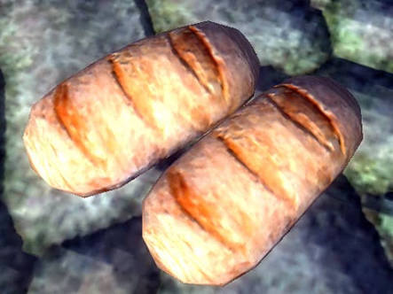

S'jirra’s famous potato bread

What’s better than potatoes?
Potato bread of course Neravar
This thick, delicious loaf, made popular by the khajiit S'jirra at Faregyl Inn,
is a perfect accompaniment to a hearty stew, soup, or ragu.
It is also great for breakfast with a savoury spread or cheese, a
nd is bound to be a crowd pleaser at home or on the road.
Try this recipe yourself to find out why S'jirra’s potato bread is so famous
To make this my dear friend you will need:
- 1 large potato, peeled and diced
- 1 ½ cups water
- 2 packets dry yeast
- 6 ½ cups bread flour
- 2 tbsp sugar
- 2 tbsp butter
- 1 tbsp salt
- 2 tbsp flour
How to:
- Boil the potato cubes for about 15 minutes, or until soft.
Do not drain, but set aside ½ cup of the cooking liquid.
Mash together the potato and remaining liquid.
- In a large mixing bowl, combine yeast with the ½ cup potato water.
Add the mashed potato mixture, dry ingredients, and butter.
Beat well for five minutes or until dough is firm and smooth.
- Remove the dough from the bowl and knead on a lightly floured surface for 6 to 8 minutes,
or until dough is smooth and elastic.
- Place in a greased bowl and cover.
Let rise in warm place for an hour, or until dough has doubled in size.
- Punch down, turn out onto a floured surface, and divide dough into two. Cover, and let rest for 10 minutes.
Shape each half into a loaf.
Place two in greased loaf pans, cover, and allow to rise until double in size (35) minutes.
- Preheat oven to 190C/375F. Before baking, brush tops with a bit of cold water and dust with additional flour
for a crisp crust
- Bake for 40 minutes, or until the crust is dark brown. Remove from pans and cool on wire rack
Benefits
This recipe is perfect for the proud warrior that is fond of using battleaxes or greatswords
because it is going to help you deal more damage and deflect incoming attacks
back